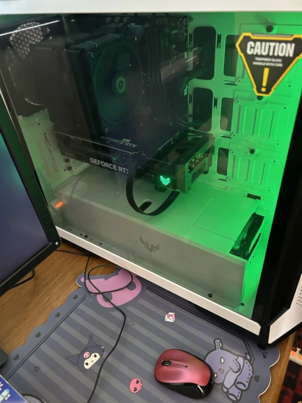

- 環境の部屋 -
- BTO デスクトップ
ゲーミングパソコン -

- スペック構成 -
- パソコンについて -
このパソコンは、BTOで、2023年9月に購入しました。
性能は特に申し分ないですが、「インテルCPU第13、14世代不具合問題」に多少なりとも振り回されました。
当時、マインクラフトをプレイしていたのですが、プレイ中にCPU温度が上がり、何度かゲームが落ちて、インベントリのアイテムが消えるという事態にみまわれ、実害が出ています。
対策としては、マザーボードのBIOSをアップデート作業を3回ほど行いました。
それからは問題は起きていません。
メインメモリについては、16GB*2から2枚増設して16GB*4にしています。
でも、64GBもいらなかったかもしれませんね。32GBで十分です。
GPUは、AI生成をするために、多少欲張ってRTX4070にしました。12GBありますし。
マザーボードは、Wi-Fiアンテナ非搭載です。有線LANで接続するので問題なし。
CPUクーラーは空冷派で、FAN系はサイズ、
電源ユニットはコルセア、
PCケースやその他ベース的には、ASUSのTUFシリーズで固める、という感じの構成ですね。
ドライブはいろいろ載せてますけど、Hドライブの2TB SSDはAI生成用のものです。
ゲームは、フライトシミュレータも問題なくプレイできます。マインクラフトくらいなら問題なく動いてくれます。
主な高負荷利用は、ＡＩ画像生成です。
Stable Diffusion XLのForgeなら全然ストレスありません。
ゲーミングパソコンですが、もうほとんどゲームしないので、ＡＩ用以外としてはオーバースペックとなってしまっています。
次のマシンは、ノートパソコンで良いかなって思ってます。
- オーディオシステム -
- オーディオについて -
テレビとレコーダーとPCをアンプにつなげてるのですが、
PCで音楽視聴中に、アンプが勝手にTVモードになったり、MUTEしたりするのですけど、
勝手に切り替わらない方法がわからない…
どなたか教えてください。汗
スピーカーは、30年前に購入した年代物です。